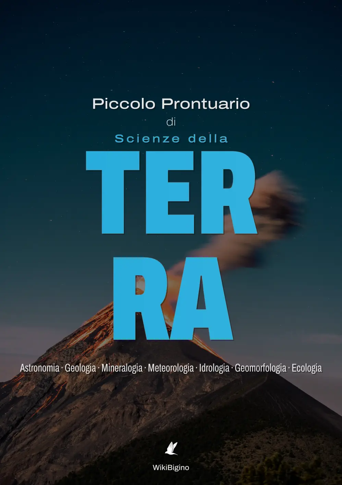
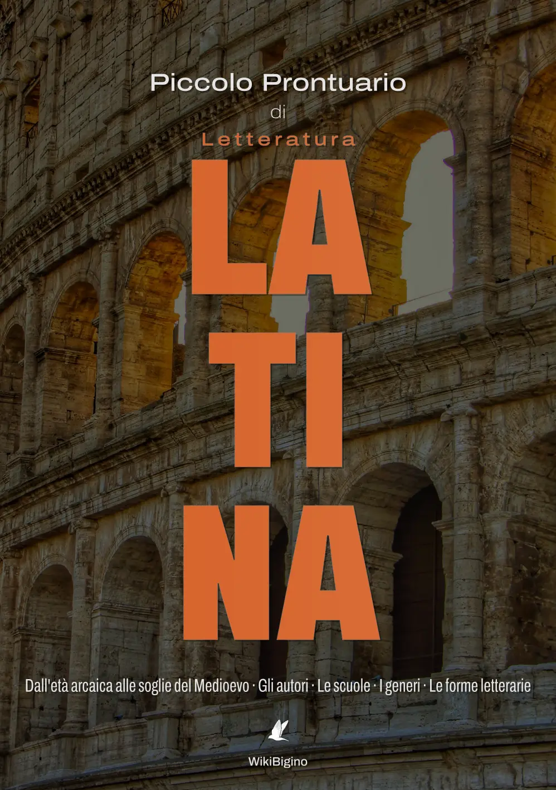
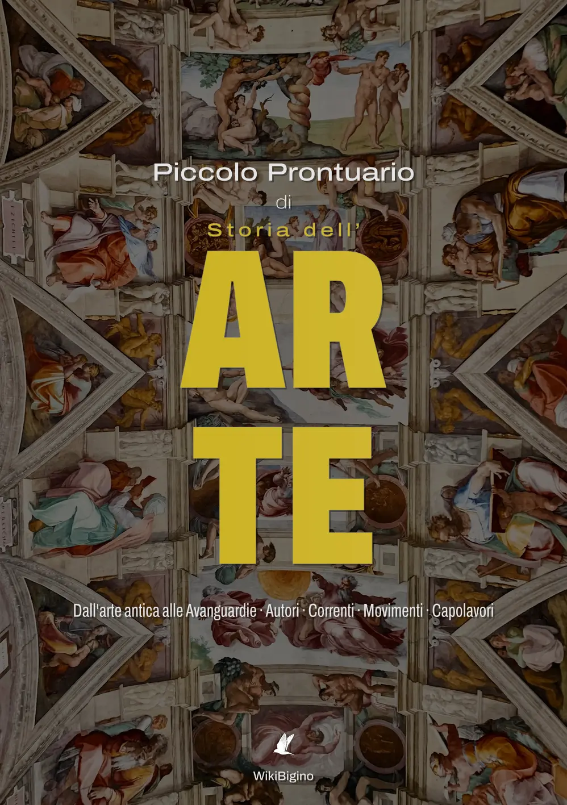

Benvenuto nel mio archivio didattico. Seleziona una materia per consultare e leggere direttamente online i prontuari in formato PDF ad alta risoluzione.
Algebra e Geometria · Analisi e Logica · Statistica e Probabilità
Meccanica e Onde · Termodinamica ed Elettromagnetismo · Fisica Atomica e Quantistica · Relatività
Inorganica e Organica · Materia, Legami e Stati · Reazioni e Trasformazioni · Ambiente
Biochimica, Microbiologia e Genetica · Evoluzione ed Etologia · Ecologia e Corpo Umano

Astronomia e Geologia · Mineralogia e Geomorfologia · Meteorologia, Idrologia ed Ecologia
Dalle Origini ai Giorni Nostri · Movimenti e Protagonisti · Prosa, Poesia e Teatro
Origini Anglosassoni ed Età Elisabettiana · Illuminismo, Restauro e Romanticismo · Età Vittoriana e Novecento

Dall'Età Arcaica al Medioevo · Autori e Scuole · Generi e Forme Letterarie
Dalla Preistoria al Contemporaneo · Eventi, Protagonisti e Vita Quotidiana · Inquadramenti Geostorici e Cronologie

Dall'Arte Antica alle Avanguardie · Correnti e Movimenti · Autori e Capolavori
Storia del Pensiero Filosofico · Morale e Metafisica · Epistemologia ed Estetica · Filosofia Politica